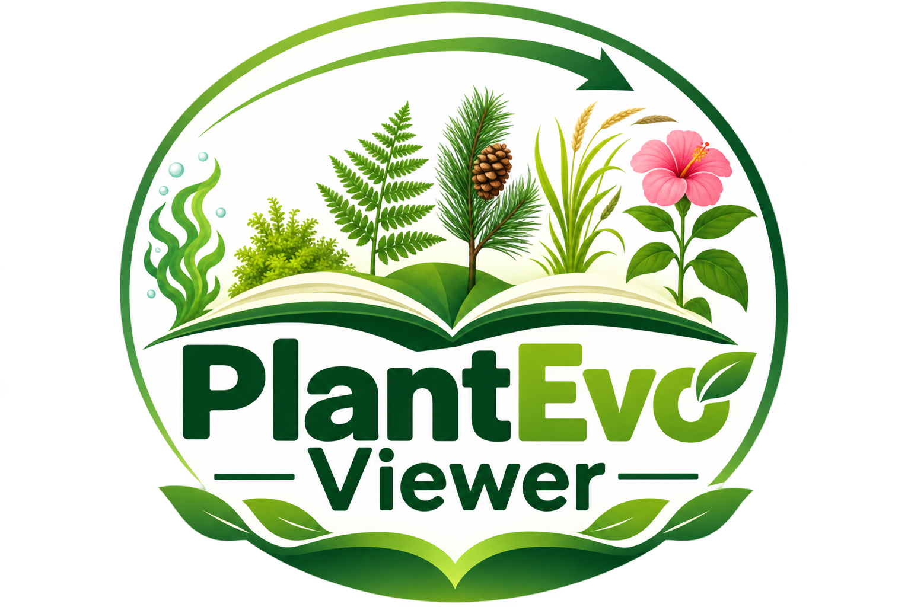

Sur le terrain
Où ont été observées ces espèces ?
Voir les positions GPS
Carte de géolocalisation des différents groupes de l'évolution de la plante
Carte réalisée par HIRE ETIENNE NEMLIN

EXPLORATION BOTANIQUE
Un voyage en images, des algues aux plantes à fleurs, pour comprendre
l'évolution des végétaux
Les végétaux sont à l'origine de presque toute la vie sur Terre : ils produisent l'oxygène que nous respirons et la nourriture de tous les êtres vivants. Pour sortir de l'eau et coloniser tous les milieux, ils ont fait évoluer leurs racines, leurs tiges, leurs feuilles et leurs modes de reproduction.
Cette page présente cette histoire de façon simple et illustrée. Choisissez un groupe de végétaux ci-dessous pour découvrir son appareil végétatif et sa reproduction.
Thalle, vie aquatique
> 1 milliard d'années
Cuticule, stomates,
rizhoïdes
≈ 470 Ma - Ordovicien
Vaisseaux, lignine,
racines
≈ 430 Ma - Silurien
Pollen, grain nu
Graines ≈ 370 Ma - Dévonien
Fleur, fruit,
pollinisation par le vent
Fleur, fruit,
pollinisation par les insectes
Où ont été observées ces espèces ?
Voir les positions GPS
Carte de géolocalisation des différents groupes de l'évolution de la plante
Carte réalisée par HIRE ETIENNE NEMLIN